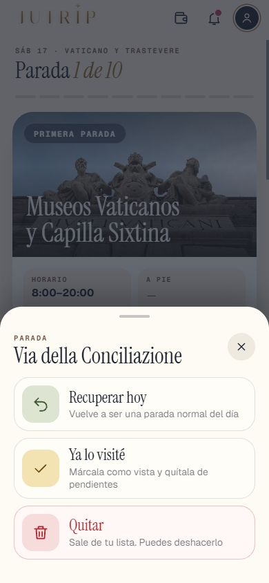
Lo que no he podido hacer o necesita una decisión tuya está en docs/dias/DECISIONES_V45.md. Capturas en tamaño iPhone (390 × 844). Los dibujos de Design (ULTIMO) están copiados en docs/diseno/proyecto/.
Antes la ida salía plegada en una línea y no se veía [Añadir tarjeta de embarque]. Ahora cada vuelo guardado se ve abierto: las horas grandes, el trayecto, el lápiz, el QR y, sin tarjeta, «+ Añade tu tarjeta de embarque».
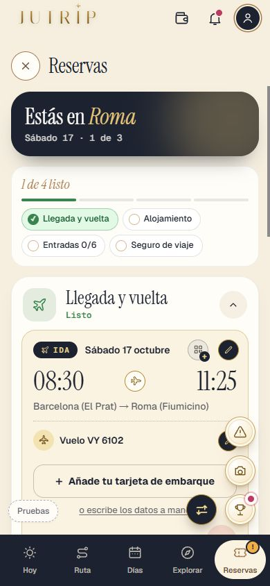
El mismo patrón en las tres: icono del documento junto al lápiz (gris con «+» si falta, dorado si está) y un botón de borde abajo mientras falta. Primero se guarda, después se sube.
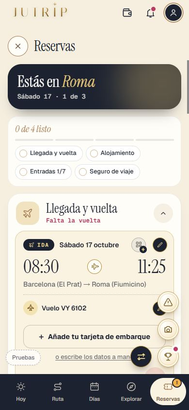
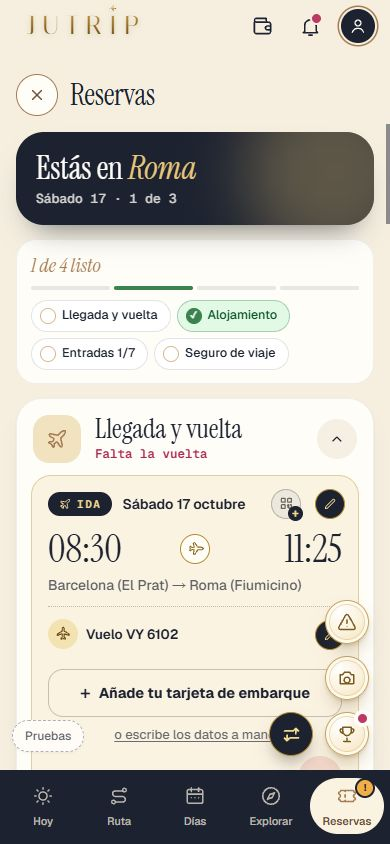
Viajando solo: días, hora, precio y [Guardar la entrada]. En grupo, dos pasos: días y hora [Siguiente]; después «Casi lista» con «¿A qué cuenta lo sumamos?» y, solo con la cuenta conjunta o del grupo, «¿Quién la ha pagado?».
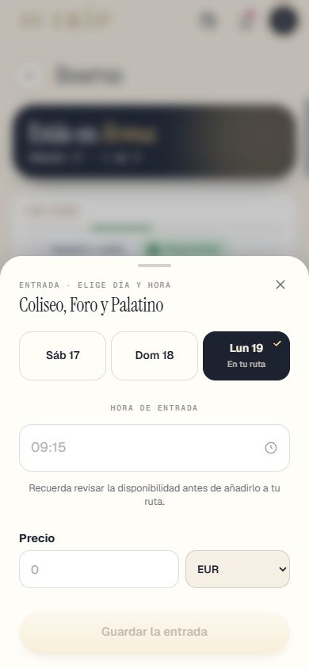
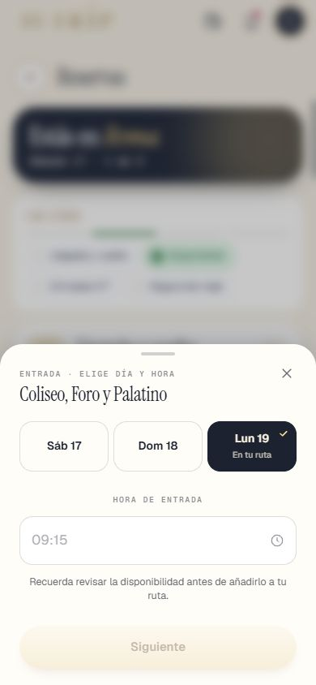
(Sin captura: En grupo, paso 2)
Antes [Ver todas] abría EXPLORAR con 3 excursiones. Ahora abre la página de todas, con filtros por tipo.
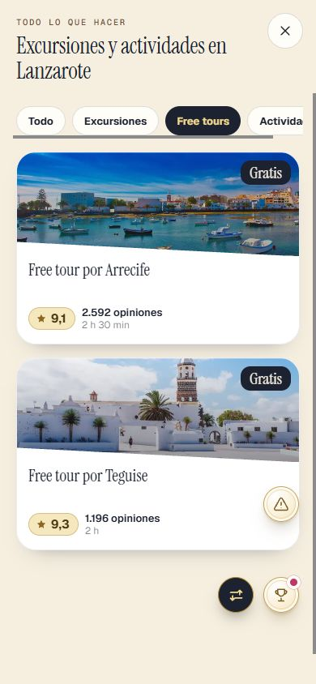
Búsqueda con Photon (OpenStreetMap): solo cuando dejas de escribir, solo en la ciudad del viaje. El punto se guarda en el viaje y HOY y «Cómo llegar» cuentan desde ahí. Con la hoja larga del pase, el bloque de dirección queda más abajo que en el dibujo (se ve haciendo scroll).
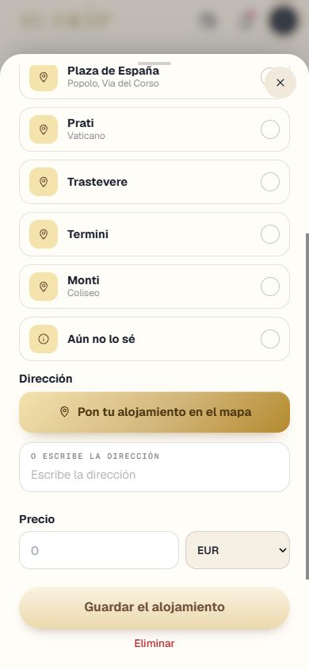
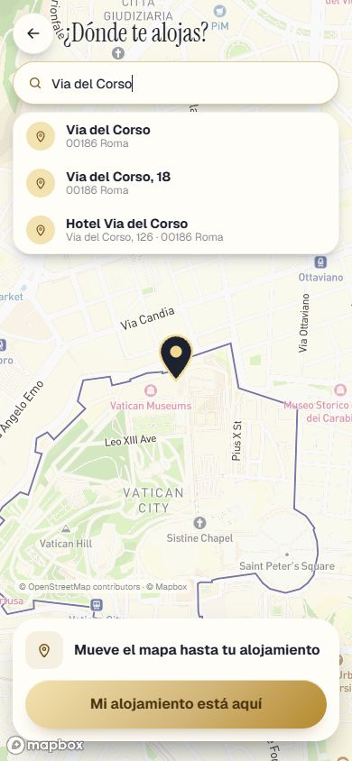
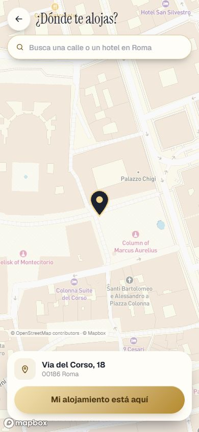
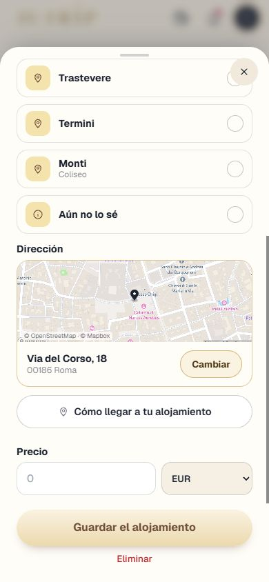
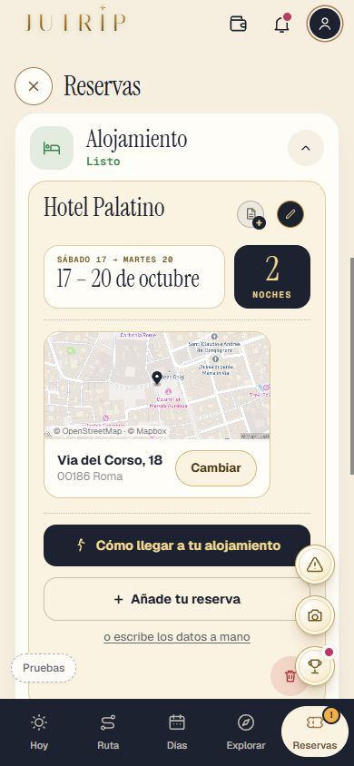
Ahora que veo Design, comparé la tarjeta de la parada, el «···» de pendientes y «Activa tu ubicación». La tarjeta de la parada ya coincidía en lo importante (dos cajas, el recuadro punteado, el reproductor azul oscuro). Ajusté el «···» de pendientes (textos y colores del dibujo: Recuperar hoy en verde, Ya lo visité en dorado, Quitar en rojo, sin flechas) y el texto de «Activa tu ubicación». Una diferencia que dejo: el dibujo tiene [Abrir Ajustes], que una web no puede hacer; se queda [Entendido].

El «···» de una parada pendiente

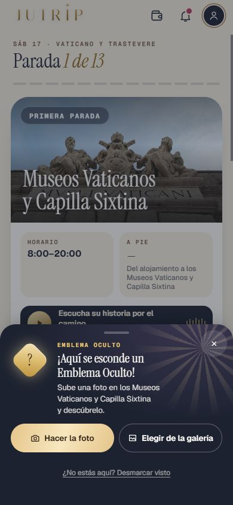
Parada sin ubicación (igual: ya coincidía)

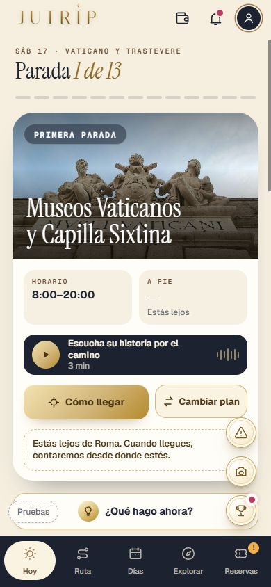
Con la ubicación lejos (igual)

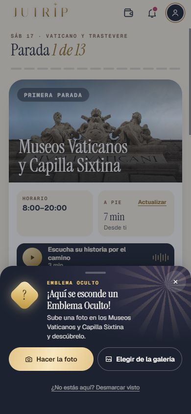
En la ruta (igual)
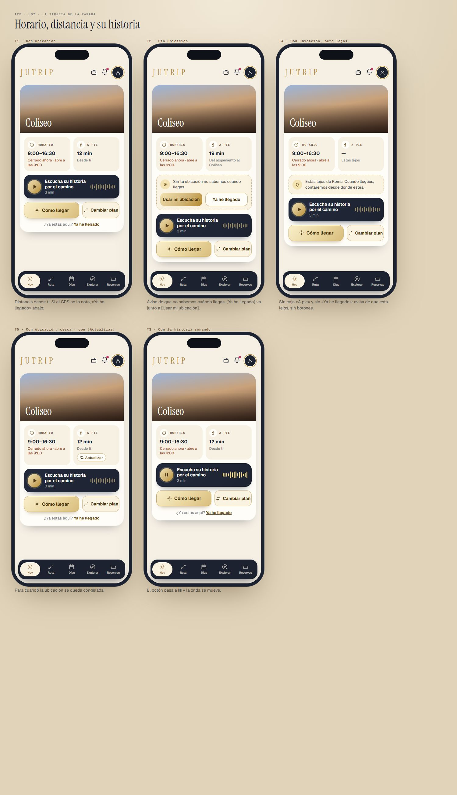
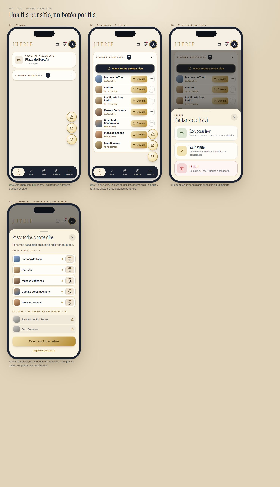
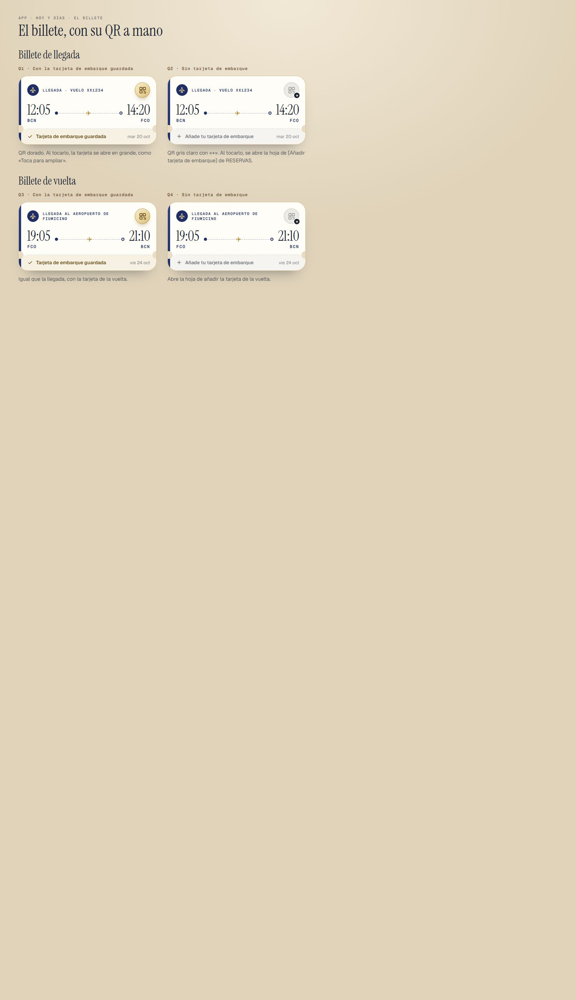
=== pruebaV42
exit=1
FALLO [reservas] [Ver todas] abre EXPLORAR
Prueba de la Tanda V42: 65 comprobaciones · 1 fallos
=== pruebaTanda10S8_C
exit=1
107 comprobaciones, 11 fallos
=== pruebaTanda10S8_D
exit=1
✗ [candado] [Añadir tu reserva] NO lleva candado con pase
✗ [A1p direccion] la dirección UNA sola vez, con la zona nuestra (["Via Cavour 12, Roma"])
✗ [A2p direccion] la dirección UNA sola vez (["Via Cavour 12, Roma"])
83 comprobaciones, 8 fallos
✗ [E1 boton] [Añadir tu entrada] (+Sube tu entrada)
✗ [Free Tour] el Free Tour con el mismo estilo que una entrada, sin precio ({"crema":true,"chip":"Ya no está en tu ruta","hora":"HORA10:00","boton":"+Sube tu entrada","lapices":1,"papelera":1,"precio":false})
✗ [candado] [Añadir tu reserva] lleva el candado sin pase
✗ [E1 boton] [Añadir tu entrada] (+Sube tu entrada)
✗ [Free Tour] el Free Tour con el mismo estilo que una entrada, sin precio ({"crema":true,"chip":"Ya no está en tu ruta","hora":"HORA10:00","boton":"+Sube tu entrada","lapices":1,"papelera":1,"precio":false})
✗ [candado] [Añadir tu reserva] NO lleva candado con pase
✗ [A1p direccion] la dirección UNA sola vez, con la zona nuestra (["Via Cavour 12, Roma"])
✗ [A2p direccion] la dirección UNA sola vez (["Via Cavour 12, Roma"])
=== pruebaTanda10S9_B
exit=0
Prueba 10S9 B: 113 comprobaciones · 0 fallos
=== pruebaTanda10S9b_A
exit=0
Prueba 10S9b A: 40 comprobaciones · 0 fallos
=== pruebaTanda10S9b_B
exit=0
18 comprobaciones, 0 fallos
=== pruebaTanda10S9b_C
exit=0
pruebaCorr6z6_reservas: salida 0 · Corrección 6z6b RESERVAS: 319 comprobaciones, 0 fallos.
pruebaTanda10S4_I: salida 0 · 78 comprobaciones · 0 fallos
6 comprobaciones · 0 fallos
=== pruebaTanda10R_B
exit=1
✗ [candado] [Añadir tu excursión] lleva el candado dorado sin pase
✗ [candado] [Añadir tu excursión] sin candado con pase
54 comprobaciones, 2 fallos
✗ [candado] [Añadir tu excursión] lleva el candado dorado sin pase
✗ [candado] [Añadir tu excursión] sin candado con pase
=== pruebaTanda10R_C
exit=0
24 comprobaciones, 0 fallos
FIN
=== pruebaTanda10S5_L
exit=0
78 comprobaciones, 0 fallos
=== pruebaTanda10S7_T
exit=0
86 comprobaciones, 0 fallos
=== pruebaTanda10S6_P
exit=0
34 comprobaciones, 0 fallos
=== pruebaTanda10N10_reservas
exit=0
52 comprobaciones, 0 fallos
=== pruebaTanda10N8_reservas
exit=0
24 comprobaciones, 0 fallos
=== pruebaTanda10N_reservas
exit=1
✗ [para_quien] con la cuenta del grupo SÍ sale «¿Quién la ha pagado?»
✗ [misma_hora] (10N5) quien compra la suya también ve «¿Para quién es?» (la reserva es suya y decide para quién)
Prueba de la Tanda 10N (D1, RESERVAS del invitado): 45 comprobaciones · 2 fallos
=== pruebaV45
exit=1
FALLO [hoja_solo] viaje solo: la hoja con los días, la hora, el precio y [Guardar la entrada], sin documento ni cuenta (ENTRADA · ELIGE DÍA Y HORA Coliseo, Foro y Palatino Sáb 17 Dom 18 Lun 19 En tu ruta HORA DE ENTRADA 09:15 Recuerda revisar la disponibilidad antes de añadirlo a)
FALLO [hoja_grupo] en pareja, paso 1: los días y la hora con [Siguiente] (ENTRADA · ELIGE DÍA Y HORA Coliseo, Foro y Palatino Sáb 17 Dom 18 Lun 19 En tu ruta HORA DE ENTRADA 09:15 Recuerda revisar la disponibilidad)
Prueba de la V45: 54 comprobaciones · 9 fallos
✗ [vuelo] la ida se ve ABIERTA, con las horas grandes (null)
✗ [vuelo] ida: QR gris con «+» y «+ Añade tu tarjeta de embarque» (null)
✗ [vuelo] vuelta: QR gris con «+» y su botón (null)
✗ [aviso_fecha] el aviso de fecha va DENTRO de la tarjeta, en naranja, con [Es correcta] (null)
✗ [aviso_fecha] ni ventana ni aviso de abajo que se va
✗ [aviso_fecha] se queda: no se va solo
✗ [error] la prueba se ha parado en la parte 1: TypeError: st(...).removeLeg is not a function
✗ [hoja_solo] viaje solo: la hoja con los días, la hora, el precio y [Guardar la entrada], sin documento ni cuenta (ENTRADA · ELIGE DÍA Y HORA Coliseo, Foro y Palatino Sáb 17 Dom 18 Lun 19 En tu ruta HORA DE ENTRADA 09:15 Recuerda revisar la disponibilidad antes de añadirlo a)
✗ [hoja_grupo] en pareja, paso 1: los días y la hora con [Siguiente] (ENTRADA · ELIGE DÍA Y HORA Coliseo, Foro y Palatino Sáb 17 Dom 18 Lun 19 En tu ruta HORA DE ENTRADA 09:15 Recuerda revisar la disponibilidad)
FIN
=== pruebaV45
exit=0
Prueba de la V45: 54 comprobaciones · 0 fallos
=== pruebaTanda10N_reservas
exit=1
✗ [misma_hora] (10N5) quien compra la suya también ve «¿Para quién es?» (la reserva es suya y decide para quién)
Prueba de la Tanda 10N (D1, RESERVAS del invitado): 45 comprobaciones · 1 fallos
=== pruebaTanda10N10_reservas
exit=0
52 comprobaciones, 0 fallos
=== pruebaTanda10S8_D
exit=0
83 comprobaciones, 0 fallos
=== pruebaTanda10S8_C
exit=0
107 comprobaciones, 0 fallos
FIN
=== pruebaV43
exit=0
Prueba de la V43 · 41 comprobaciones · 0 fallos
=== pruebaV44
exit=0
Prueba de la V44: 43 comprobaciones · 0 fallos
=== pruebaV36
exit=1
=== pruebaTanda10J
exit=0
La prueba de la Tanda 10J: 253 comprobaciones · 0 fallos
FIN
=== pruebaTanda10N_reservas
exit=0
Prueba de la Tanda 10N (D1, RESERVAS del invitado): 45 comprobaciones · 0 fallos
=== pruebaV45
exit=0
Prueba de la V45: 54 comprobaciones · 0 fallos
=== pruebaTandaHOY2b_D
exit=1
92 comprobaciones · 2 fallos
✗ [8b] el mirador no hereda la foto del Tempietto (va sin foto hasta que haya una buena)
✗ [6] 2 o 3 sitios, cada uno en su fila (1)
=== pruebaV36_cliente
exit=0
Prueba de la Tanda V36 (cliente): 28 comprobaciones · 0 fallos
=== pruebaV36_servidor
exit=0
La prueba de la V36 (servidor): 28 comprobaciones · 0 fallos
=== pruebaV36C
exit=0
Prueba de la Tanda V36C: 122 comprobaciones · 0 fallos
=== pruebaV36B
exit=0
Prueba de la Tanda V36B: 41 comprobaciones · 0 fallos
FIN
=== pruebaTandaHOY2b_D
exit=1
92 comprobaciones · 1 fallos
✗ [6] 2 o 3 sitios, cada uno en su fila (1)
FIN
=== pruebaJutrip
exit=0
Prueba de JUTRIP: 130 comprobaciones · 0 fallos
FIN